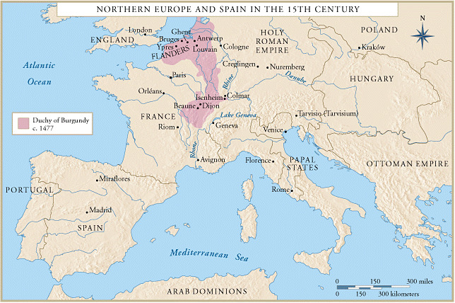
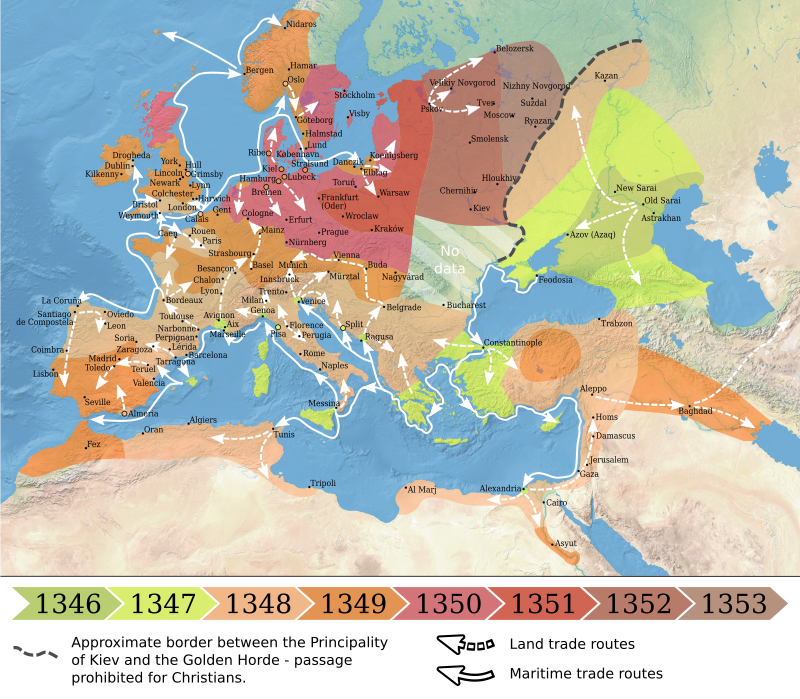

Si bien al hablar de feudalismo se habla de estratos sociales, es también posible ya hablar de clases sociales, pues este es el “inicio” de las mismas. Si bien el ciclo de opresores y oprimidos no es nuevo a este punto, el sistema de clases si, este está dando los primeros pasos en el orígen del capitalismo. Esto es para decir que en este punto, estrato o clase social son ambos términos válidos en el estudio histórico.
El feudalismo era un sistema de estratos sociales caracterizado por su rigidez y sus roles bien marcados por el nacimiento de la persona. Aquellos que eran de sangre noble podían dedicarse a ser guerreros, ya que se podían costear el equipo necesario para no morir en el campo de batalla. Cabe destacar que la herencia de un padre noble iba en su mayoría al primogénito varón, los demás hijos podían decidir dedicarse al oficio de guerreros o de hombres de fé. En caso de ser un segundo hijo y dedicarse a ser un guerrero, este tenía el estatus de noble, pero no mucho mas. Pues ser un noble te da poder político, mas no daba riquezas más allá del primer hijo varón.
El segundo estrato social era la iglesia, donde en sí ostentaba una gran parte del poder en la edad media, pero estos eran unos pocos, la mayoría de curas y oficiales de bajo rango eran similares a los campesinos, pues estos trabajaban con sus manos, pero además del trabajo físico de mantener la iglesia en la que vivían y cultivar para poder comer, estos tenían tiempos de plegaria y de estudio. Estos estudios variaron entre la lectura de las escrituras, el estudio del latín (pues las misas siempre eran en latín) y la documentación en papel.
El tercer estrato social era el de los campesinos, pero este “no discriminaba” pues se era campesino si no se era noble u oficial de la iglesia. Esto quiere decir que un hombre que apenas puede pagar tributo a su señor feudal y uno que vive entre lujos porque su familia se dedica al comercio son iguales en calidad de sus derechos.
Es esta dicotomía entre campesinos que en el período final del feudalismo comienza a generar fracturas, pues aquellos con poder económico buscaban derechos políticos, pero los nobles no iban a dar su derecho de nacimiento a gente común. Es en este contexto donde surge la burguesía, pues eran personas que vivían en los burgos que se dedicaban al comercio y a la acumulación de riquezas. Son estos burgueses los que van a protagonizar una gran parte del renacimiento como mecenas. Los mecenas son personas de gran poder adquisitivo que comisionan arte (en todas sus formas) a artistas (desde músicos, arquitectos, pintores, escultores, etc.).

La muerte negra, peste negra o peste bubónica arrasó la población de la Europa medieval durante unos 15 años. Este no fue el único problema que redujo la población, pero si fue de los peores. Es en 1500 +- que la población comenzó a subir nuevamente. Dos puntos a destacar, primero, pensar en la falta de conocimiento veraz y efectivo para combatir esta enfermedad. Segundo, la peste negra sigue existiendo, cada pocos años surgen casos por el consumo de marmota cruda. En caso de la edad media, la mayór fuente de contagio fueron ratas infectadas (y, consecuentemente, pulgas que llevaban el virus). Como mencioné, este no fue ni de cerca el único problema, pues las guerras (internas, como las guerras de las rosas, y entre reinos, como la de los 100 años entre Francia e Inglaterra) y hambrunas (en especial la gran hambruna de 1315) mermaron la población hasta quedar en un tercio de su tamaño original. Es en este contexto que surge el renacimiento.